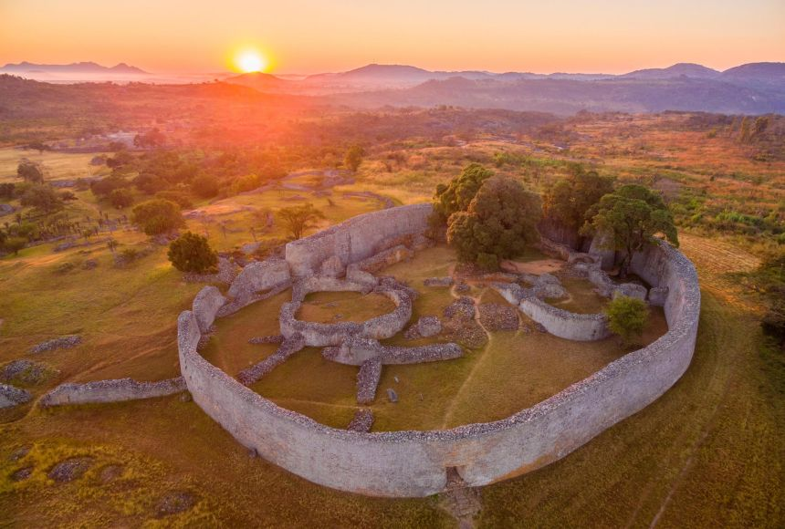
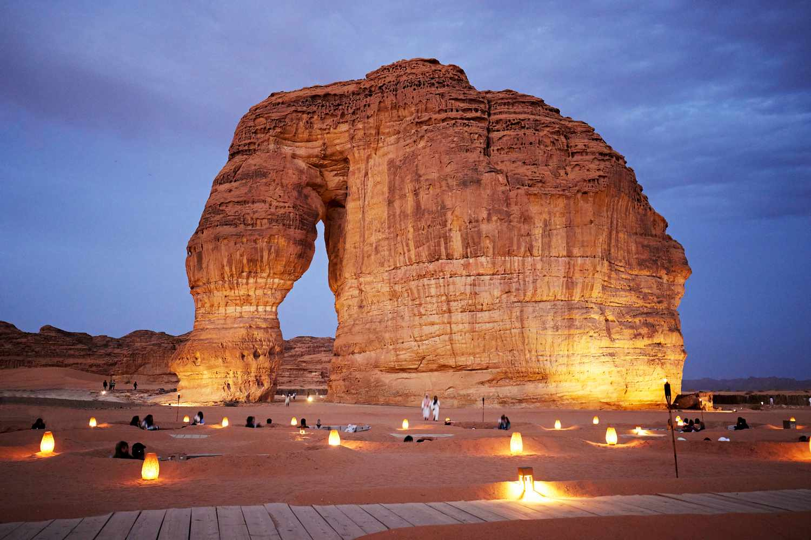
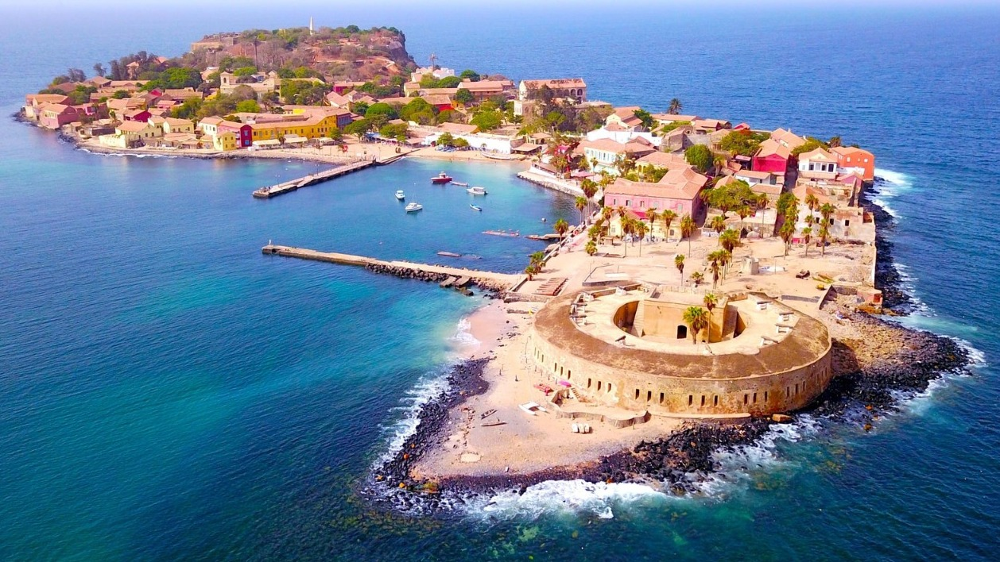
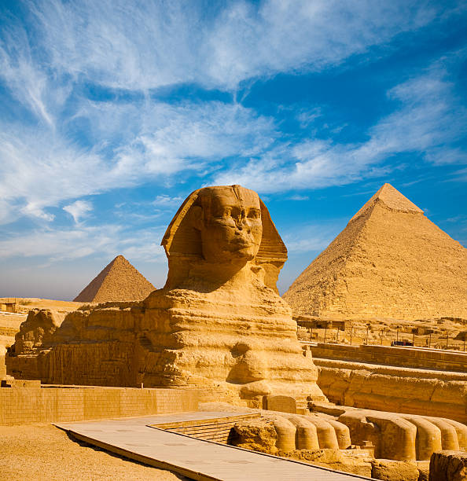

Great Zimbabwe Ruins
The stone remains of a major medieval African city and trading centre.
View / download guide ↗
Journey through archaeological wonders, striking landscapes and places of cultural memory.
Explore selected landmarks from this region. Each place has its own story, style and cultural significance.

The stone remains of a major medieval African city and trading centre.
View / download guide ↗
A dramatic sandstone formation shaped by natural erosion over time.
View / download guide ↗
An island whose architecture and history preserve difficult chapters of the Atlantic slave trade.
View / download guide ↗

Architecture, materials and landscape can reveal how communities lived, traded, worshipped and adapted to their surroundings.
Explore full gallery ↗